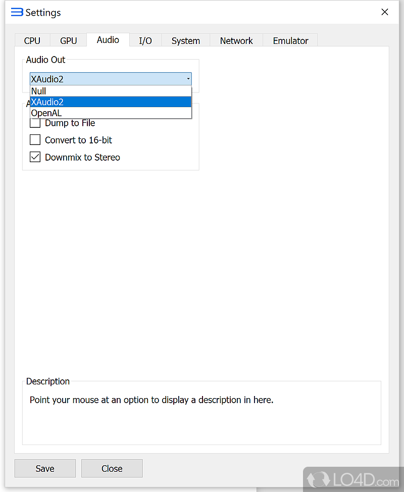

RPCS3 避坑指南：五个我踩过才记住的模拟器暗礁
开源 PS3 模拟器 RPCS3 看着解压就能玩，其实有几个几乎所有人都会碰的坎。从应用商店假货、网络状态到音频下混，过来人把症状和解法一次讲清。
说实话 RPCS3 已经是模拟器界对新手相对友好的那一类了——解压就能跑，社区兼容列表做的比谁都细，七成以上的 PS3 商业游戏都能进。它的官网上也把这几项核心能力写的明明白白。但友好归友好，我第一次装完激动得要开游戏，结果整整折腾了一下午才进主界面。后来发现那几个坑根本不是我独有的，几乎每篇贴吧吐槽里都有人中招。
这篇就把我踩过的五个最常见的坑摊开讲，每个都给你一个"症状→原因→解法"的三步走，看到就能抄作业。
第一个坑：应用商店里搜出来的全是假货
这是我第一天最魔幻的经历——手机上搜"PS3 模拟器"，出来一排 APK，图标做得跟真的一模一样，介绍里还写着"移植自官方 RPCS3"。我信了，装了打开发现是个套壳广告机，点哪里都弹下载别的游戏。
回来翻资料才搞清楚：RPCS3 官方根本不发布任何安卓版本。项目自己的下载渠道只覆盖 Windows、Linux、macOS 和 FreeBSD，市面上所有带 RPCS3 名字的 APK 都是社区第三方移植，而且其中相当一部分被改了包、塞了东西。Windows 那边也有类似的坑——搜索引擎第一条可能是个下载站，压缩包解压出来多了个浏览器首页篡改器。
解法很简单：只认项目自己的下载和官方仓库。 哪怕慢一点，哪怕要翻个墙，就这两条路。任何带"破解版""汉化增强版""极速版"前缀的，直接关掉。这条不是 RPCS3 独有，但它的社区名气够大，山寨版本的密度是同类里最高的。

第二个坑：游戏卡在联网检测死活不进主界面
我第一次跑《神秘海域 3》，片头过去之后出了一个"正在连接网络"的小圈圈，转了三分钟没动。关了再开、拔了网线、换 WiFi，都不行。以为是游戏文件坏了，重新下了一遍，还是卡。
去翻 FAQ 才发现，这不是网络问题，是模拟器给游戏看的网卡状态不对。后来在rpcs3文档翻了一下完整的排查条目才搞清楚，RPCS3 的 Network 标签页里有个叫 Network Status 的下拉框，四个选项分别模拟"网线没插""握手中""获取 IP 中""已联网"。我那次它默认在"Connecting"——游戏看见网卡一直在握手，就觉得网络没准备好，一直等。只要把它拨到"IP Obtained"，游戏瞬间就放过了联网检测，直接进单机流程。
这个坑的症状特别有迷惑性——你看着网络圈圈，第一反应肯定是"我网不好"，然后开始折腾路由器、改 DNS，白忙活半小时。解法就是 Network 标签页→Network Status→选 IP Obtained。 单机玩家永远用这个值，99% 的游戏根本不会真的去连外网，只是走个过场。
第三个坑：耳机里听不见对话，背景音乐倒是很响
这个坑我怀疑是 PS3 游戏本身的锅。PS3 时代很多大作把人声和关键音效放在 5.1 声道的中置或环绕声道里。RPCS3 默认不把多声道下混成立体声——你插个普通双声道耳机，游戏以为你有 5.1 系统，人声就从物理上不存在的中置扬声器输出，耳机自然收不到。于是你听到的就是：背景音乐很清楚，开枪声很响，角色说话跟蚊子叫一样，或者干脆什么都没。
我第一次以为是音频驱动的问题，换了 XAudio2 和 OpenAL 两个后端都不行，还开了"转 16 位"——那是解决浮点音频爆音的开关，完全走错了方向。
正确解法在音频设置页最下面：把 Downmix to Stereo（下混立体声）勾上。 它会把游戏的 5.1 声道全部混进立体声输出，耳机和立体声音箱的人声立刻回来。笔记本外放同样建议开——笔记本音箱物理上就是立体声，不开下混你听不见的不止人声。
什么时候别开？你真接了 5.1 声卡加六只音箱，那当然关掉保留原始多声道。除此之外所有人默认开。

第四个坑：键鼠党想模拟"摇杆推一半"和六轴体感
我是键鼠党出身，想着"一个手柄要两百多，键盘凑合用吧"。结果装上之后发现：按键都是数字信号——要么是十字键，要么是圆圈，没有"推一半摇杆"这个状态。动作游戏里冲刺需要把左摇杆推到底，轻推是走路；用键盘的话你按方向键就是到底，松掉就是零，中间那个走路的状态永远出不来。《战神 3》里需要轻推摇杆走碎步过机关那段，我卡了十分钟，后来老老实实买了个 XBOX 手柄才过去。
更绝的是六轴体感——PS3 手柄里有陀螺仪和加速度计，部分游戏需要晃手柄来解谜或操作镜头。键盘鼠标根本没法模拟这个，I/O 标签页里也没有对应的处理器选项。遇到这种游戏，要么跳过，要么真接手柄。
提前给键鼠党一个预期：适合键鼠的是 AVG、回合制、休闲类，还有原生支持键盘的 PC 回流作品；动作和竞速类勉强能玩但体验打折；需要体感的直接放弃。 真打算长期玩的话，手柄这笔钱省不下来。
第五个坑：帧数低了去调音频延迟
这是我踩的最蠢的一个。模拟器跑某款游戏的时候帧率上不去，我看声音也有一点点延迟，就去设置里找音频缓冲相关的高级项，改来改去声音反而爆了，帧数也没变。后来查了性能相关的 FAQ 才明白：RPCS3 的音频延迟跟帧率是绑定的——模拟器的 CPU 资源先用来喂游戏逻辑和渲染，如果这两块吃满了，音频解码自然跟着慢。你改音频缓冲只是在挪延迟的位置，不是在解决根因。
帧数低优先查什么？ 渲染器对不对？GPU 后端用的是 Vulkan 还是 OpenGL？CPU 有没有超线程开关没开？这些才是帧率的瓶颈。音频延迟只是结果，不是原因。把 CPU 和 GPU 那边调好，音频延迟自然跟着回来。
防坑清单速查
- 下软件只认官方下载页和 GitHub 仓库，应用商店同名 APK 全是假货
- 游戏卡联网检测 → Network 标签页把状态设为"IP Obtained"，单机永远用这个值
- 耳机听不见人声 → 音频页勾上"下混立体声"，双声道设备默认必开
- 键鼠能凑合用但解决不了摇杆半推和体感，长期玩手柄绕不开
- 帧率低别碰音频设置，那是结果不是原因，往渲染器和 CPU 方向查
知道这些坑之后，RPCS3 其实相当省心——社区更新频率稳定，兼容列表实时维护，画质增强选项比你想象的多。把这五个坎绕过去，剩下的就是选喜欢的游戏开干了。
顺手提一句，这套资料我同步在了几个常用的代码托管平台，想对着仓库读文档的朋友可以直接跳转：GitHub、Gitee、GitCode，国内访问哪个顺手用哪个。